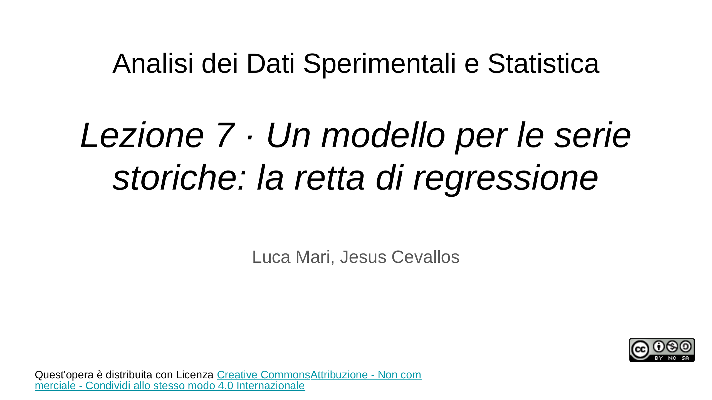
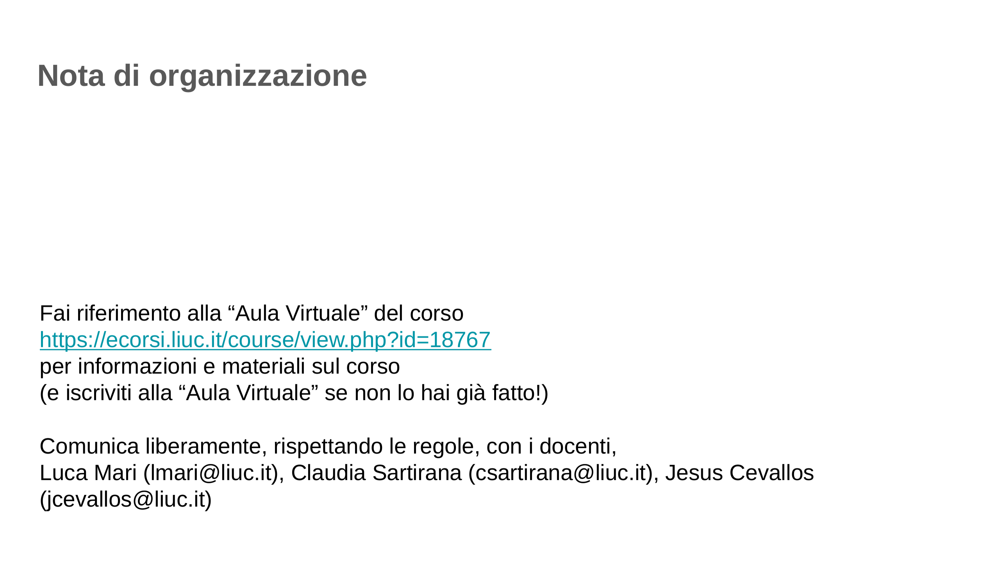
![Qualche suggerimento: – consulta l’“Aula Virtuale” su ecorsi – usa il materiale didattico, e non solo i tuoi appunti – frequenta le lezioni, e fallo in modo attivo, anche nella parte “laboratoriale” – lavora in modo costante – confrontati regolarmente con qualche compagna/o – cerca di capire e di imparare a risolvere problemi, non di memorizzare · (vedi il materiale didattico, capitolo 4. Analisi di serie storiche) (e puoi valutare le tue conoscenze e competenze a partire dagli esempi di problemi proposti)](img/03-1f7ca589cc.webp)
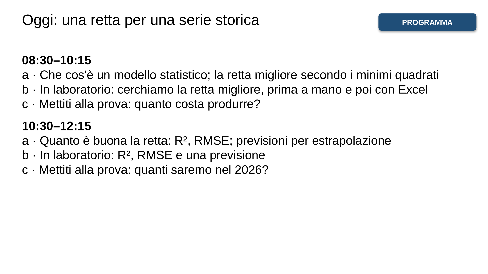
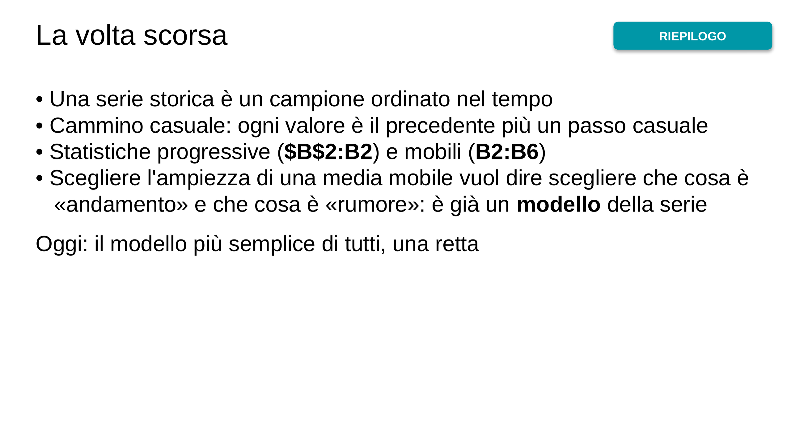
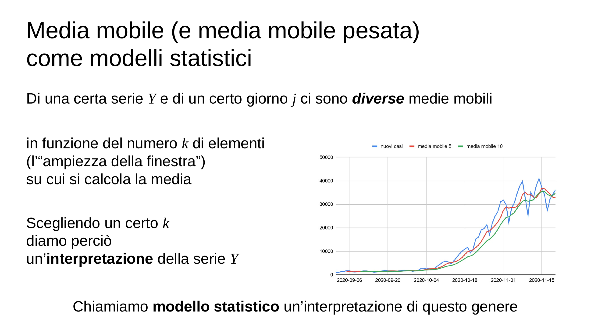
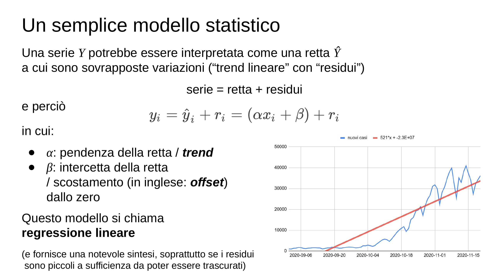
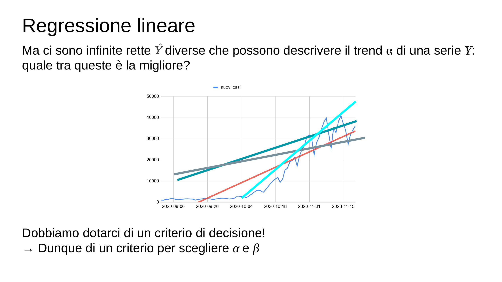
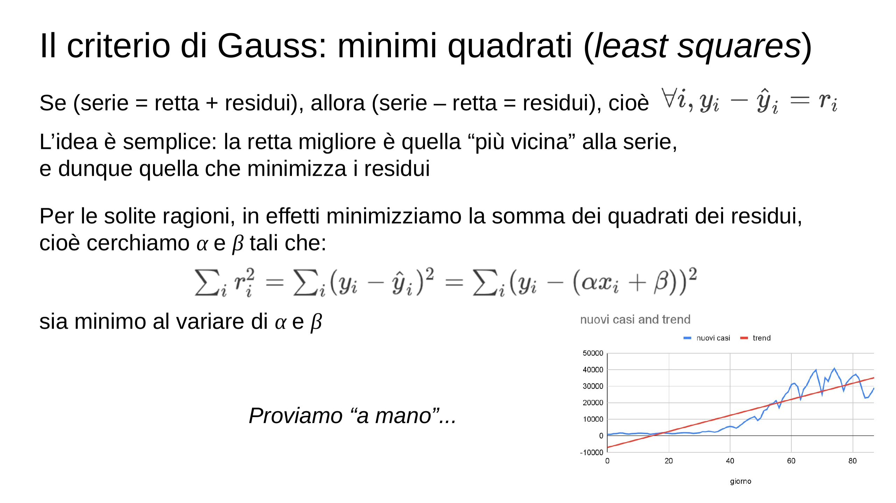
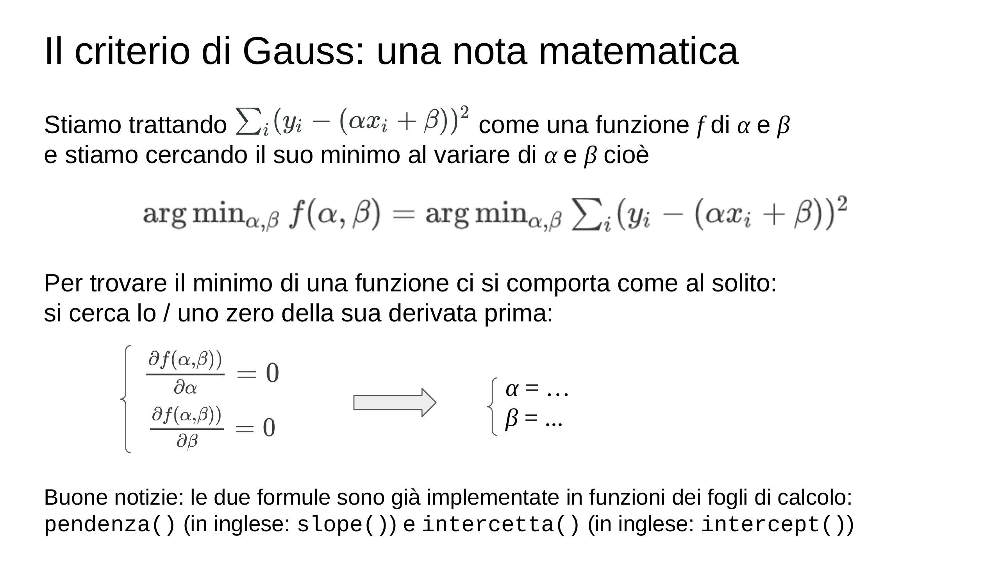
Minimi quadrati · il minimo senza derivate
Un quadrato più un resto
Dove è più piccola questa funzione? Guardiamo i due pezzi, uno per volta.
- $5$ non dipende da $c$: è un pavimento, uguale ovunque.
- $(c-3)^2$ è un quadrato: si appoggia sul pavimento e non va mai sotto.
- Il quadrato vale zero solo per $c=3$.
Quindi $h(c)$ vale sempre almeno $5$, e vale esattamente $5$ per $c=3$.
Il minimo è $5$, in $c=3$. Nessuna derivata.
Con $f(\alpha,\beta)$ si usa la stessa idea, due volte: un quadrato che contiene il parametro, più un resto che non lo contiene.
Trascina $c$: la barra rossa cambia, quella verde no.
Minimi quadrati senza derivate · 1/10
Teniamo ferma la pendenza
Dieci punti. Cerchiamo la retta più vicina: servono una pendenza $\alpha$ e un'intercetta $\beta$.
Un passo alla volta. Prima fissiamo la pendenza: per esempio $\alpha=$ . La retta tratteggiata ha solo la pendenza: $y=\alpha\,x$.
Con la pendenza fissata restano tante rette parallele, una per ogni $\beta$. Quale scegliamo?
Minimi quadrati senza derivate · 2/10
Quello che resta, tolta la pendenza
Per ogni punto: quanto della sua $y$ non è spiegato dalla pendenza?
Un punto alla volta. La sua $y$ è ; la pendenza ne spiega $\alpha\,x=$ . Resta .
Lo stesso per tutti i punti. Chiamiamo $u_i$ quello che resta.
Minimi quadrati senza derivate · 3/10
Togliamo la pendenza
Ora togliamo a ogni punto la sua parte di pendenza, $\alpha\,x_i$.
I punti scendono: la retta tratteggiata diventa orizzontale. Ingrandiamo.
Restano gli $u_i$. La pendenza non c'è più: il problema è diventato più semplice.
Minimi quadrati senza derivate · 4/10
Il residuo, visto da qui
Il residuo di una retta: il punto meno la retta.
Spostiamo la parentesi: dentro c'è quello che resta, tolta la pendenza.
È $u_i$. Il residuo è la distanza di $u_i$ da una retta orizzontale, all'altezza $\beta$.
Scegliere la retta vuol dire scegliere l'altezza $\beta$ più vicina a tutti gli $u_i$.
Minimi quadrati senza derivate · 5/10
La somma dei quadrati
Per misurare quanto la retta è lontana dai punti: i quadrati dei residui, sommati.
Ogni quadrato ha per lato un residuo. $f$ è l'area totale.
Abbassiamo la retta: i quadrati grandi si rimpiccioliscono e $f$ scende.
Più in basso $f$ risale: alla stessa distanza dall'altra parte vale come prima.
Il minimo è nella media degli $u_i$: $\beta=m_U$.
Minimi quadrati senza derivate · 6/10
Di nuovo: un quadrato più un resto
Mettiamo $f$ in un grafico, al variare di $\beta$.
Viene una parabola.
E si scrive come $h(c)$: un resto che non dipende da $\beta$, più un quadrato.
Il quadrato vale zero solo in $\beta=m_U$: lì $f$ è minima, e vale il resto.
Vale per tutti i dati: il resto non contiene $\beta$, il quadrato si annulla nella media.
0 + 0 = 0
Minimi quadrati senza derivate · 7/10
Rimettiamo la pendenza
L'altezza migliore è la media degli $u_i$.
Rimettiamo la pendenza: la retta orizzontale torna inclinata e passa tra i punti.
La media degli $u_i$ è la media delle $y$ meno $\alpha$ volte la media delle $x$.
Per ogni pendenza $\alpha$, l'intercetta migliore è $\beta=m_Y-\alpha\,m_X$.
Minimi quadrati senza derivate · 8/10
La retta passa per il baricentro
La retta con l'intercetta migliore, per la pendenza che abbiamo fissato.
Il punto (media delle $x$; media delle $y$) è il baricentro dei punti. La retta ci passa.
Perché? Mettiamo nella retta l'intercetta migliore.
Raccogliamo $\alpha$.
In $x=m_X$ la parentesi vale zero: $\hat y=m_Y$, qualunque sia $\alpha$.
Minimi quadrati senza derivate · 9/10
Cambiamo la pendenza: il ventaglio
Ogni pendenza ha la sua intercetta migliore.
Più pendenza: l'intercetta scende e la retta gira attorno al baricentro.
Meno pendenza: gira dall'altra parte. Il perno resta lì.
Tutte le rette migliori passano per il baricentro: un ventaglio.
Minimi quadrati senza derivate · 10/10
Quale retta del ventaglio?
Per scegliere: di nuovo la somma dei quadrati dei residui.
Al variare della pendenza, $f$ disegna un'altra parabola.
Il suo minimo dà la retta dei minimi quadrati.
![Il criterio di Gauss e il machine learning · Con l’obiettivo di trovare i valori di α e β che minimizzano la funzione di errore · possiamo anche: 1. scegliere dei valori iniziali per α e β in modo casuale 2. calcolare il gradiente di f, cioè le due derivate parziali e , che indicano la direzione in cui f cresce più rapidamente, così che e indicano la direzione in cui far diminuire f 3. assegnare e dove la costante k, chiamata “learning rate”, controlla la velocità di convergenza 4. ripetere dal passo 2 fino a che i valori di α e β non rimangono costanti · Questo algoritmo si chiama discesa…](img/11-626e94e3fc.webp)
![In laboratorio: la retta migliore · LABORATORIO · Foglio nuovo. A1 settimana, B1 vendite (migliaia di €) A2:A11 le settimane 1…10; B2:B11: 3 5 4 6 8 7 9 11 10 12 Grafico a dispersione di A1:B11. Che retta disegneresti a occhio? Retta di prova: I2 (pendenza) = 1, I3 (intercetta) = 2 C2: =$I$2*A2+$I$3 D2: =B2-C2 (residuo) E2: =D2^2 fino alla riga 11 I4: =SOMMA(E2:E11) la somma dei quadrati dei residui Gara: cambia I2 e I3. Chi ottiene la somma più piccola? Poi: =PENDENZA(B2:B11;A2:A11) =INTERCETTA(B2:B11;A2:A11)](img/12-dd84a98869.webp)
![Mettiti alla prova! Quanto costa produrre? · CHALLENGE · Un'azienda ha un costo fisso di 500 € al giorno e spende 3 € per ogni pezzo; ma i costi veri oscillano a caso, di ±100 €. 1. Simula 30 giorni: pezzi prodotti 10, 20, …, 300; costo = 500 + 3 · pezzi + un numero a caso tra −100 e 100 2. Fai il grafico (pezzi in orizzontale, costo in verticale) 3. Con PENDENZA e INTERCETTA ritrova costo per pezzo e costo fisso: escono 3 e 500? 4. Premi F9 cinque volte: di quanto cambiano? 5. Porta l'oscillazione a ±500 €: che cosa succede? 6. Che cosa sono, in questo problema, la pendenza e l'intercetta?](img/13-1f04483914.webp)
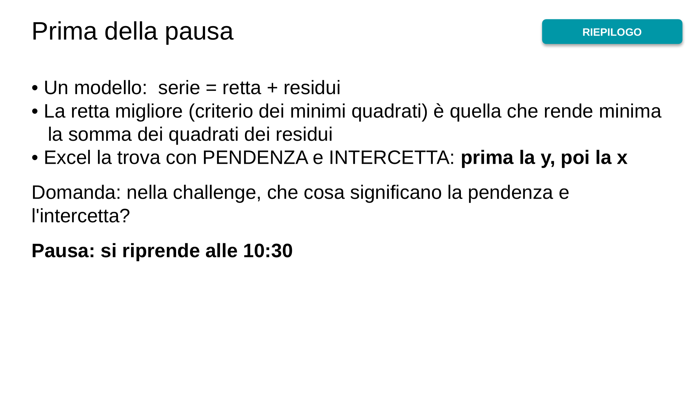
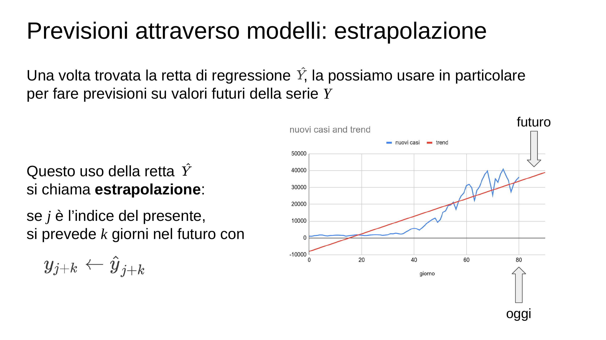
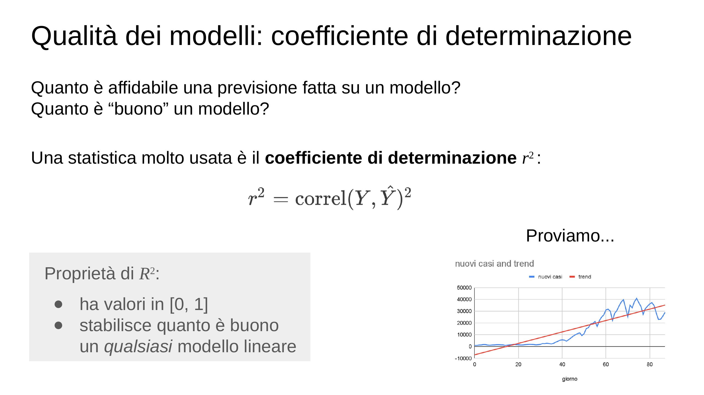
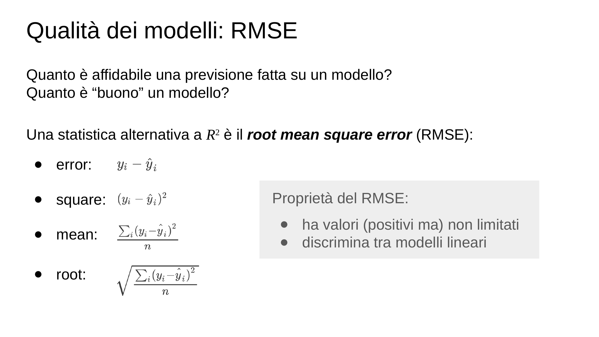
![R² e RMSE: come si leggono · R² (coefficiente di determinazione): quale frazione della variabilità della serie è spiegata dalla retta. Va da 0 a 1 e non ha unità di misura. R² = 0,93: la retta spiega il 93% della variabilità; il 7% resta nei residui RMSE (root mean square error): l'errore tipico della retta, nell'unità dei dati. RMSE = 0,77 migliaia di €: la retta sbaglia di solito di circa 770 € Attenzione: R² alto vuol dire che la retta descrive bene il passato. Non garantisce che la previsione del futuro sia buona.](img/18-fb1ffa57a2.webp)
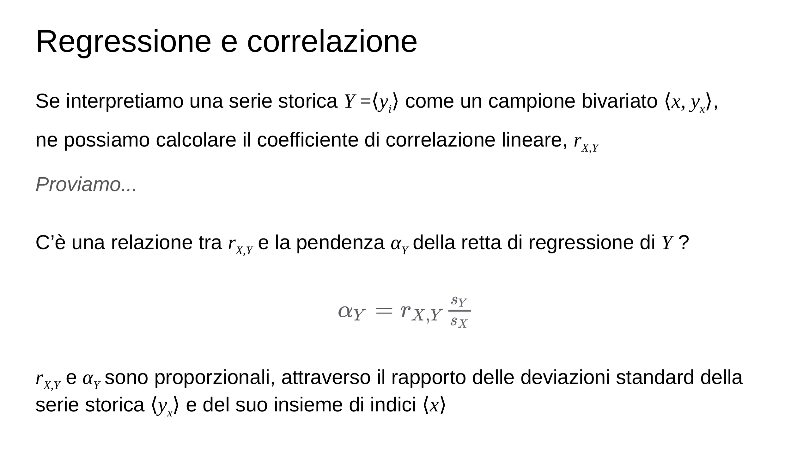
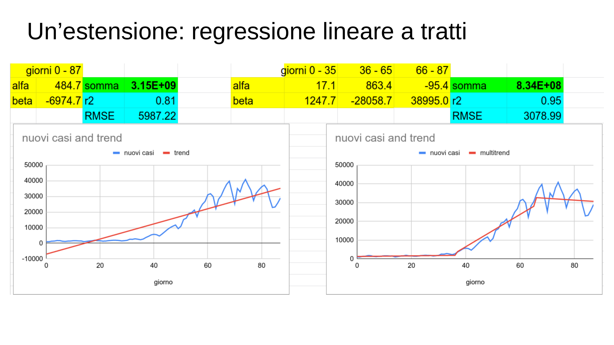
![In laboratorio: R², RMSE e una previsione · LABORATORIO · Nello stesso foglio delle vendite: I9: =RQ(B2:B11;A2:A11) il coefficiente di determinazione I10: =RADQ(MEDIA(E2:E11)) l'RMSE (la colonna E contiene già i residui al quadrato) I12: =$I$2*12+$I$3 la previsione per la settimana 12 Sul grafico: clic sui punti › + › Linea di tendenza › Altre opzioni: lineare, con equazione e R² sul grafico. Coincidono con le tue celle? Quanto ti fidi della previsione per la settimana 12? E per la settimana 100?](img/21-11b3943375.webp)
![Mettiti alla prova! Quanti saremo nel 2026? · CHALLENGE · File popolazione_italia.xlsx: la popolazione residente in Italia dal 1952 al 2014. 1. Fai il grafico (anno, popolazione) 2. Calcola pendenza, intercetta e R². Di quanti abitanti cresce l'Italia ogni anno? 3. Calcola l'RMSE: di quanto sbaglia la retta, di solito? 4. Con la retta, prevedi la popolazione del 2026 5. All'inizio del 2025 l'Italia aveva circa 59 milioni di residenti (ISTAT). La previsione è buona? Perché? 6. Che cosa vorrebbe dire l'intercetta? Ha senso?](img/22-d581b4638b.webp)
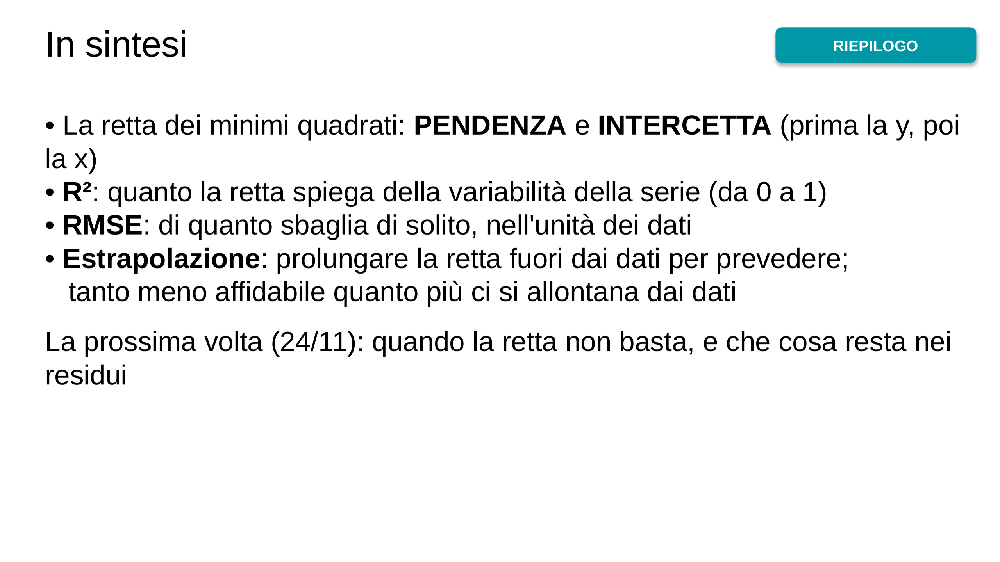
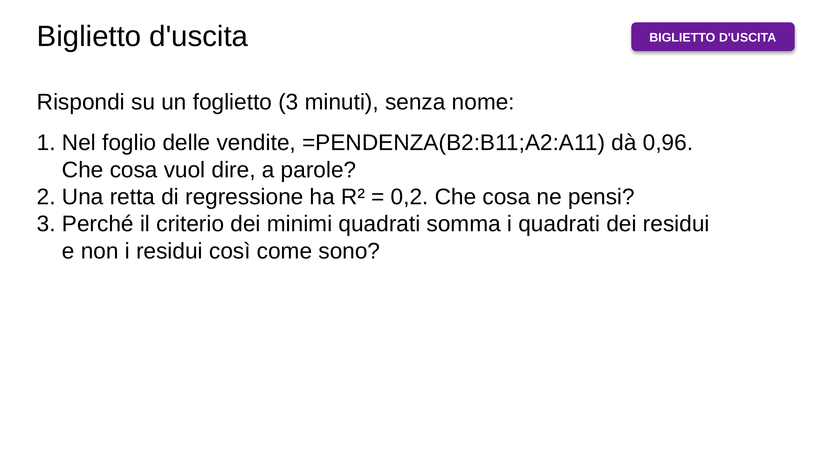